A Tuner is only as good as the tools they are using. In today's
world the most important tools for tuning are no longer
found in your toolbox.
Just think, in the 1980's Top Fuel dragsters made 2500 hp using a 500
cubic inch ( 8.2 Liter) Aluminum Hemi headed
engine, as amazing as this might sound, today this same displacement
and very similar looking hemi headed engines are making over 8000 hp!
Why? It is all about optimizing all aspects of the engine to improving
efficiency. This demands the tools
to gather data so you can understand what is happening inside the
engine and identify opportunities to improve
efficiency. Together TunerStudio and MegaLogViewer bring you the power
to capture, view and analyze data as
your engine produces it, then act upon it. These easy to use
applications simplify making changes and even offer recommendations and
automatic correction
using data analytics at a level that is not offered by any other tuning
solutions at any price.
Just some of the TunerStudioMS features only available in the
Registered Edition
|
With a simple online registration you can Unlock
all the features of TunerStudio MS in minutes! Whether you want a more
powerful tuning aids, improved diagnostic tools, dedicated Car PC
dashboard, or built in data analytics to tune the car for you; the
registered version of TunerStudio MS preserves all your existing
settings and projects, and unlocks many additional features to save you
time and headaches! Make Payments via Credit Card or PayPal and you
will receive a registration code via email within minutes!
|
Register
Online Now!
 |
Amazing Dashboards -
Perfect for setting up a dedicated car PC or giving your laptop head
snapping wow factor, TunerStudio MS brings you:
VE Analyze Live! -
Yes it really does tune the car for you while you drive! Starting with
concepts of VE Analyze in MegaLogViewer and taking it to the next
level with dynamic offset record seeking.
Whether your just running with rough tables or have already put hours
into your tune, VE Analyze Live will dial in your fuel tables to a new
state.
Why does it work so well? By combining a vast tuning experience with
expertise in data analytics you can leverage technology to improve your
tune.
An expert tuner can look at a data log record and know what changes
that record is looking for, but one record can only tell so much.
At best a record only shows the inputs and results at that instant in
time with many other outside factors effecting the data.
One record nay tell you one thing, but another on the same cell will
say something else.
To produce the best results you need to look at each record, identify
and discard the ones that are junk due to other factors, then consider
ALL quality data.
That is where the human brain fails, it simply can not consider the
full picture, computers can. As you drive VE Analyze live will look at
all the data, filter what the junk and use weighted statistical
averages to calculate the optimal values for you Fuel tables.
VE Analyze Live offers:
- Automatic update to controller - You can either have
TunerStudio produce a recommended table as you drive, or let it
acutally send the updates as you drive to continually improve you tune
while going down the road.
- Adjustable Standard Filter - In addition to TunerStudio
filtering data with lack of credibility, you can adjust standard
parameters such as RPM, Coolant temp, load, MAP, MAF to match your
configuration or preference.
- Custom Filters - One of the Standard Filters doesn't cut
it
for your setup? The custom filter lets you apply free form logical and
mathematical formulas to filter nearly any data you desire.
- Lambda Delay Table - Compensates for delays to your Lambda
Sensor readings caused by not just the Lambda sensor itself, but more
importantly the time spent flowing through the exhaust pipes under
varying conditions.
- Heat Maps - As you drive you can see how much data has
been
gathered for all sections of the table and how much the table values
have changed.
- Authority Limits - Allow you to limit the amount of change
TunerStudio can make in a single session to prevent damage if something
goes wrong.
- Full Readouts - Watch the major data elements as
TunerStudio
uses them with a gauge cluster and histogram to show just what your
engine is doing.
WUE
Analyzer –
The
benefits of auto tuning have now been incorporated into the warmup
enrichment curves allowing you to save time and the headache of only
being able to tune the WUE settings once a
day.
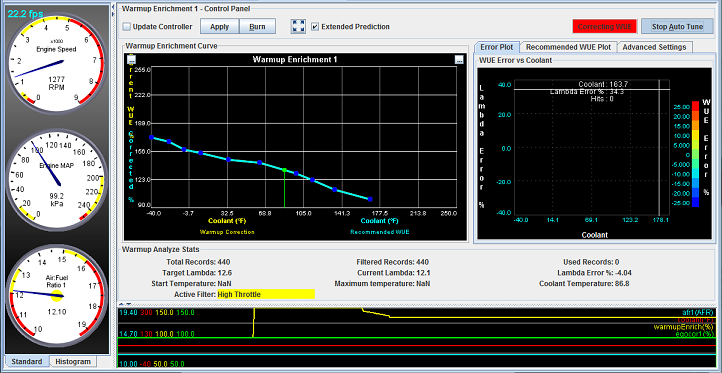
Upgraded Ignition Logger* - The
high speed logger lets you data log at a much faster sample rate
giving you a clearer picture of a sensors signal. With the additional
support from the firmware developers viewing this data has never
been easier. It allows you to graphically see the signal that your
engines sensors produce as the controller sees it. This is great for
those who have been trying to track down that one specific issue but
regular data logs just do not sample the data fast enough to give you
a clear picture of the problem or for the those using there
MegaSquirt ECU on a more uncommon engine and need to capture more
data to test your sensors or circuitry as well as calibrate the
sensors.
The
high speed loggers and viewer with x and y plotting have been
implemented in MS2 3.3.0 + and MS3 1.2.4 +. The ignition loggers are
only supported by MS1/Extra, MS2/Extra, and MS3 firmware.
Difference Reporting
-
No more guessing what you changed in that file, just look at the
difference report an see the settings side by side easy to read with
the differences highlighted!
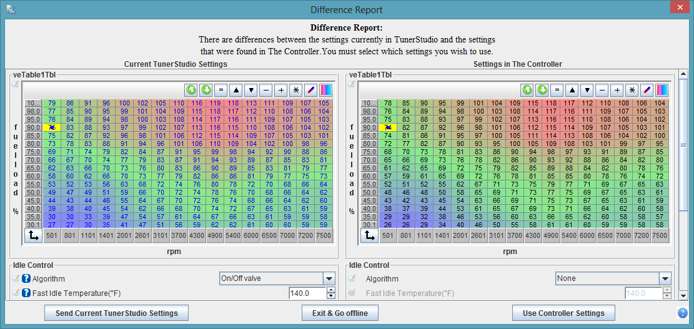
- Compare on connect - As soon as TunerStudio connects to
your
controller it will chack to see if you have made any offline changes
since you were last connected, present the differences side by side,
and let you select which ones you want to keep.
- Compare loaded Tune to saved one - Instantly see exactly
what changed between the tune you have loaded and any other msq you may
have with a side by side visual view of settings that don't match.
Setting Notes & Comments
-
Take notes while tuning and configuring for yourself or any one you may
be sending the msq to.
Additional Tuning Aids -
Throughout the Full Edition of TunerStudioMS you will find additional
features and settings to make life simpler while tuning.
- Adjustable 2D table tell tail - Blue
line and dots to show the path through the map you have taken. The
number of records is configurable.
- Improved 3D Tables - Configurable
increment sizes, accented value changes, more user settings.
- Switchable 2D to 3D View - Snap
nearly any table to 3D view mode to gain quick insite with a different
perspective.
- Table Smoothing - Smooths out rough or bumpy table based on the smoothing factor used.
- Diagonal Fill
- S The fill feature allows you to select a cell on the Ve Table then
press the "f" key and all the cells up and to the right of the selected
cell will change to the selected cells value.
- Automatic Logging - Allows
you to set conditional expressions on a specific ECU variable so that
you can trigger your logging to start or stop based on almost any ECU
condition.
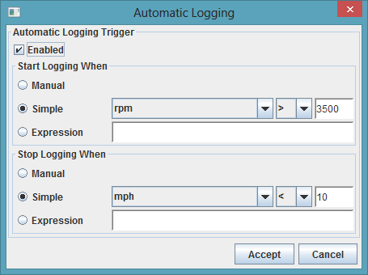
- Logging Profiles - With logging profiles you can
narrow down your logged fields list and increase the data rate of the
log being captured. This is only true for firmware that supports
partial runtime reads. Another reason for only selecting the
necessary fields to be logged is the size of the log file.
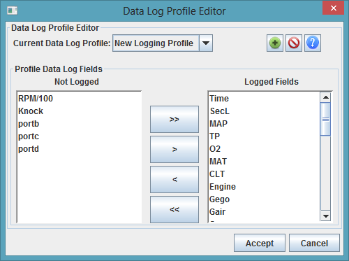
- Ve Table Generator - Is
a powerful tool to create a
good baseline Ve Table at the start of your tuning process and can
help to decrease the time it will take to fine tune your table. The Ve
Table generator has five different options to help get the base map as
accurate as possible Naturally Aspirated, Turbo, Turbo
w/Intercooler, Supercharger, and Supercharger w/Intercooler.
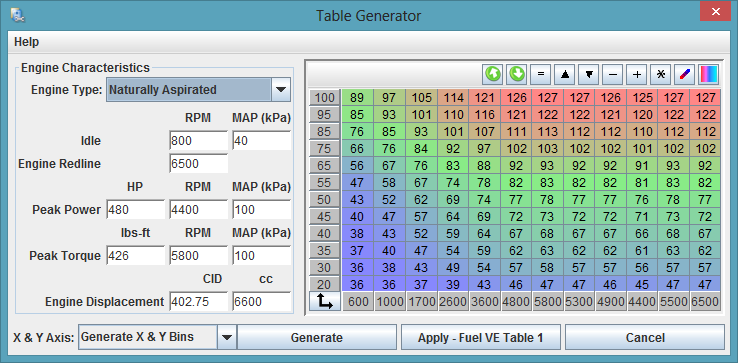
Automatic Tune Restore Points
- Was something working better last month? Something happened to your
Controller and you lost your settings? No need to waste
time figuring out your old settings, TunerStudio MS
will automatically capture all tune settings creating restore points
that you can go back to review or load at any time. Or you may simply
want to pull up some difference reports to compare setting changes and
differences to any point in the past.
- Automatics Restore Point on Project
Close - Each time you close the project or application, if there
were any changes to the settings, TunerStudio will create a new Restore
Point.
- Automatics Restore Point on Difference
Reports - Connect to the controller, get a difference report, even
if you select Use Controller Settings, a restore point of all local
TunerStudio settings will be created before loading the controller
settings. So if you should have any second thoughts, you can go back to
what TunerStudio had at any time.
- Restore
Point Difference Reports - Pull up a full visual difference
report for any historic restore point.
Project Archive
- This is a great feature when you want to share your tune /
project with someone or you are looking for some assistance from tech
support and need to send use your tuning files. Archiving your project
takes all the files within your project folder and saves them in a zip
format so they can quickly be emailed.
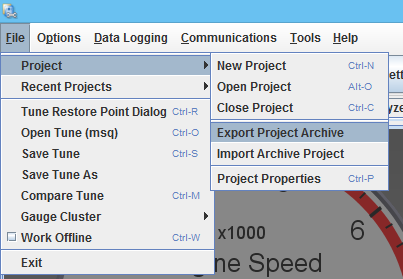
Search
- Ever have trouble finding the dialog you just had open because you
cant remember what it was called but you remember the name of the
setting, well now you can just type in a key word and the search
feature will allow you to find any dialog that contains those key
words. This is great a feature for beginners allowing you to find
specific settings in seconds rather then minutes saving you valuable
time in the tuning process.
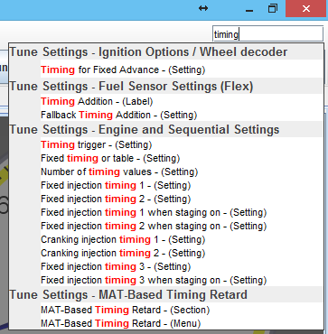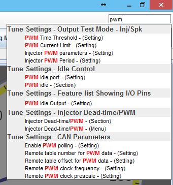
Additional Communication options-
With the purchase of a registration you get additional communication
drivers such as USB and Wireless which adds a WiFi option so you can
connect to a IP address directly, and the D2XX COM driver that
removes the VCP (Virtual COM Port) layer allowing for faster
communication.
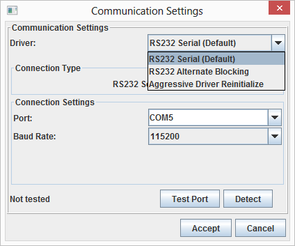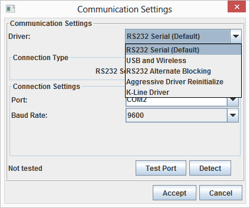
Performance & Economy Fields-
Wish you had some of those gauges that have recently been made almost
standard equipment on most vehicles. You know the ones, average MPG /
KML, Fuel Flow in 3 different unit options, and instant MPG / KML /
Miles Per Liter, not including the gauges you might find in some of
todays higher end sports cars like Net Power and Net Torque. We also
added two other gauges Horse Power loss do to aerodynamic drag and HP
loss do to rolling. These fields can all be data logged as well as
displayed on your Dashboard.
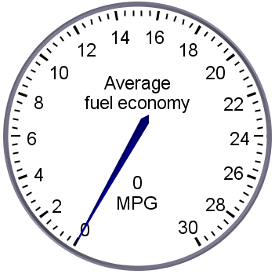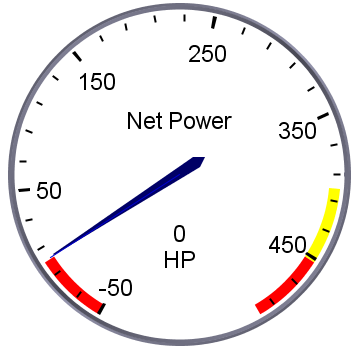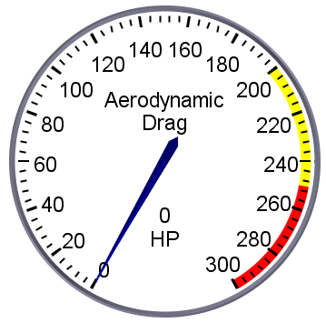
GPS Support - You will find the integrated GPS
support very helpful in many ways and quickly will not want a data log
without it.
Once a GPS is setup in TunerStudio, all the common GPS
fields plus more like HP, Tq and Fuel consumption become fully integrated with your TunerStudio Project
therefore are available for display on gauges and will be captured in
your data logs. These fields include:
- Latitude - GPS Latitude
- Longitude - GPS Longitude
- Heading - GPS Direction you are traveling
- Accuracy - Reported GPS Accuracy based on visibility and quality of your GPS device
- Altitude - GPS Altitude in Meters
- GPS.PositionX - A relative position in meters along the East-West axis from the point in which you first aquired GPS lock.
- GPS.PositionY - A relative position in meters along the East-West axis from the point in which you first aquired GPS lock.
- GPS_Time - Standard GPS Time in ms.
- GPS_Update - Will show as 1 each time the GPS data was updating
for that log record, 0 if it is the same data as the last record.
- MPH - Speed in MPH
- KPH - Speed in KPH
For each of these Fields you will find a Gauge to display the values in
real-time. To change a Gauge to show the GPS field, right click on it
and select:
Application Gauges --> The gauge of your choice.
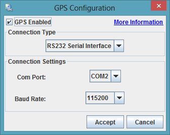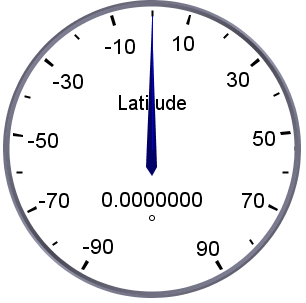
CAN Project Navigation
- As you can see below when you have multiple CAN devices things can
get a little lengthy, and that is one of the shorter examples. Now with
the CAN project navigation menu you can easily switch between each
devices main menu to keep those sub menus under control.
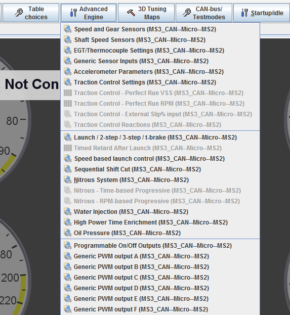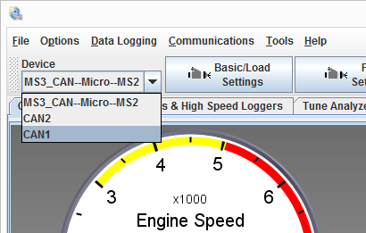
Curve Graph Baselines -
See what the curve settings were when you started to compare the
changes you have made, or revert back if you need to.
- Curve Baselines - Quickly toggle curve baselines on or off
at any point.
- Automatics Restore Point on Difference
Reports - Connect to the controller, get a difference report, even
if you select Use Controller Settings, a restore point of all local
TunerStudio settings will be created before loading the controller
settings. So if you should have any second thoughts, you can go back to
what TunerStudio had at any time.
- Restore
Point Difference Reports - Pull up a full visual difference
report for any historic restore point.
Plugins - Now the registered
TunerStudio lets you create your own plugins or download ones created
by others.
- Easy Access to the controller
- No need to write your own communications. The TunerStudio Plugin API
lets you read runtime data and settings or update and change any
setting with simple API's.
- Plugins that integrate with TunerStudio - Extend
TunerStudio into a full CAR PC with Plugins for music players, nav
systems, what ever you can think up.
©2012 EFIAnalytics.com